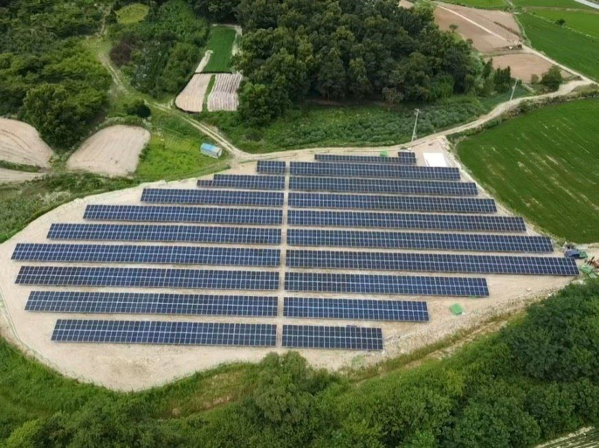

Business Areas
어떤 발전소를 지어드리나
소규모 발전사업자의 지상형 발전소가 주력이고, 공공시설·공장 지붕형, 건물일체형(BIPV)·수상형·리파워링까지 네 유형 모두 준공 실적이 있습니다.

Scope of Work
다섯 공종을 직접 수행합니다
토목·구조물 제작·구조물 공사·전기·계통연계를 한 회사가 맡습니다. 공종 사이의 대기와 조율이 사라져 공정이 짧아지고, 그만큼 공사비가 낮아집니다.
토목공사
경사·레벨 측정 장비를 동원해 최적의 토목공사를 구축합니다.
구조물 제작
아연도금·포스맥 등 경쟁력 있는 소재로 구조물을 제작합니다.
구조물 공사
숙련 인력을 투입해 신속하고 정확하게 설치합니다.
전기공사
전기설비 규정에 따라 정확하고 안전하게 설계·시공합니다. 전기공사업 등록 기업.
계통연계·시운전
한전과의 고압케이블 연결 작업과 시운전까지 마무리합니다.
Structure & Electrical
구조물과 전기, 두 공종이 품질을 정합니다
모듈은 제품이지만 구조물과 전기설비는 현장에서 만들어집니다. 25년 수명과 안전은 이 두 공종에서 결정됩니다.
구조물 소재
| 소재 | 특징 |
|---|---|
| 용융아연도금 강재 | 강재 표면에 아연을 입혀 부식을 막는 가장 일반적인 방식. 비용 효율이 높고 강성이 좋습니다. |
| 포스맥 (PosMAC) | 아연·마그네슘·알루미늄 합금 도금 강판. 일반 아연도금보다 내식성이 높고 절단면 자가 보호 성능이 있어 해안·고습 지역에 유리합니다. |
| 알루미늄 | 가볍고 녹이 슬지 않아 지붕 하중 여유가 적을 때 유리하나 강재보다 비용이 높습니다. |
- 풍하중·적설하중: 건축구조기준(KDS)의 지역별 기본풍속·기본적설하중 적용
- 지상형 기초: 지반 조건에 따라 콘크리트 독립기초 또는 스파이럴 파일
- 지붕형: 기존 지붕 구조의 허용 하중 검토 후 고정 방식 결정
계통연계 절차
- 한전 연계 협의설치 용량과 연계 지점을 신청해 선로 여유 용량과 연계 방식 확정
- 수전·수배전 설비일반적으로 100kW 미만은 저압, 그 이상은 특고압(22.9kV) 연계로 변압기·차단기를 갖춘 수전설비 필요
- 케이블 포설 · 접지전압강하 기준 이내로 케이블 산정, 접지·피뢰 설비 시공
- 사용 전 검사한국전기안전공사의 절연·접지·보호장치 검사
- 계통연계 · 시운전고압케이블 연결, 인버터 동기화, 초기 발전 데이터 검증